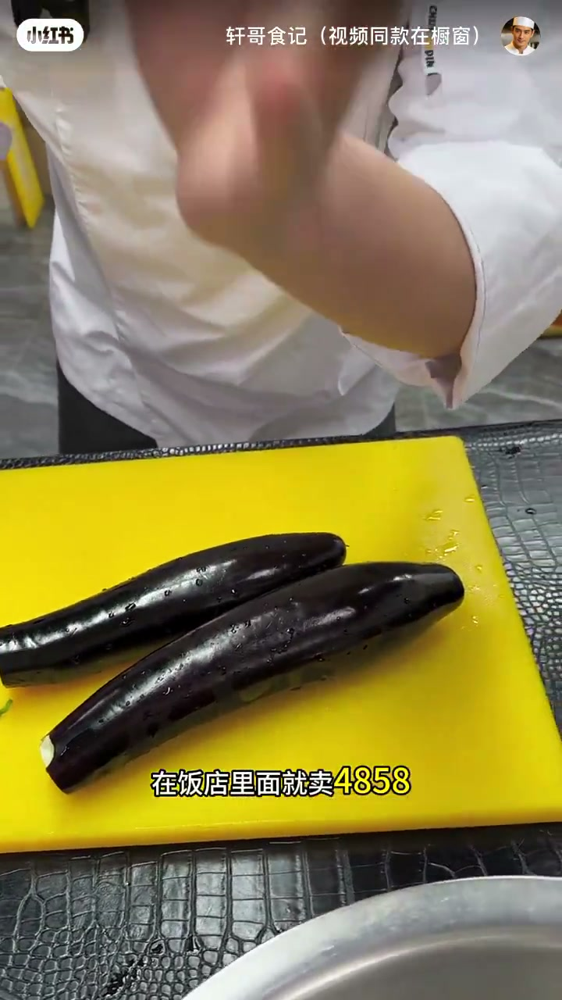
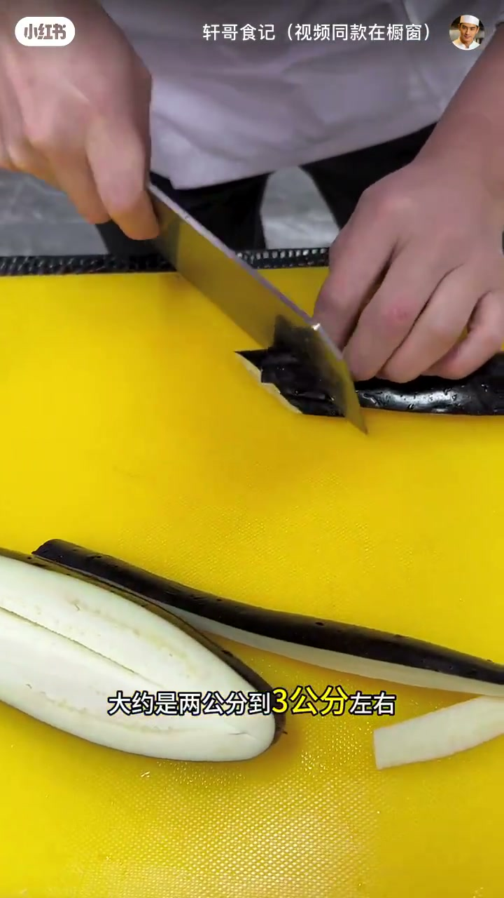
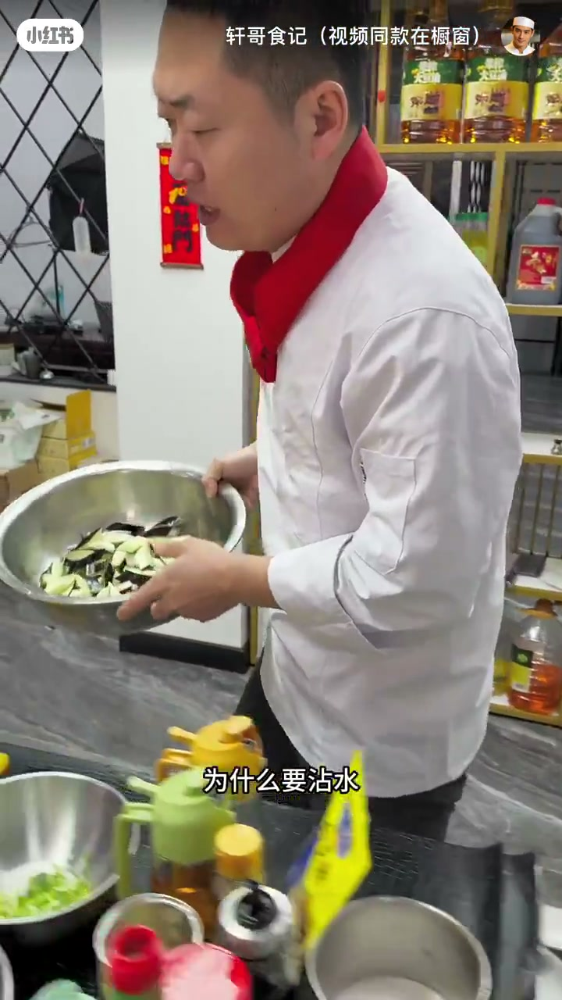
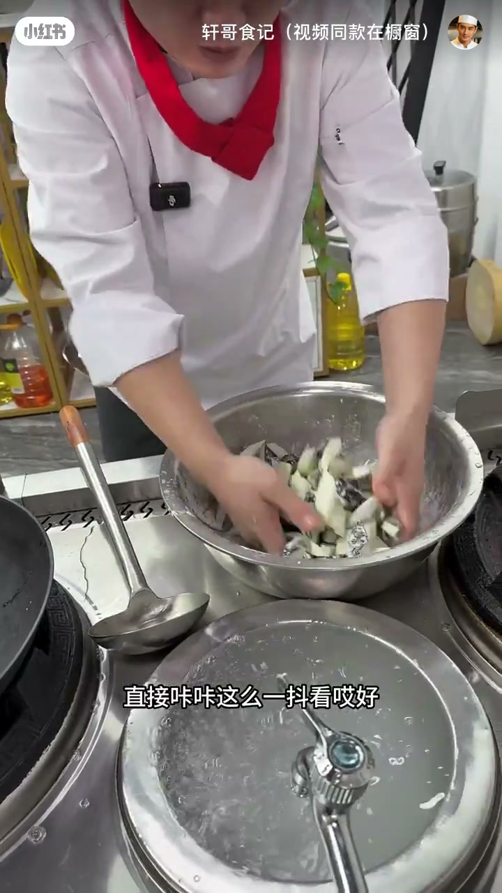
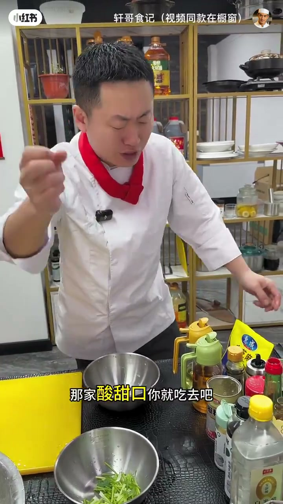
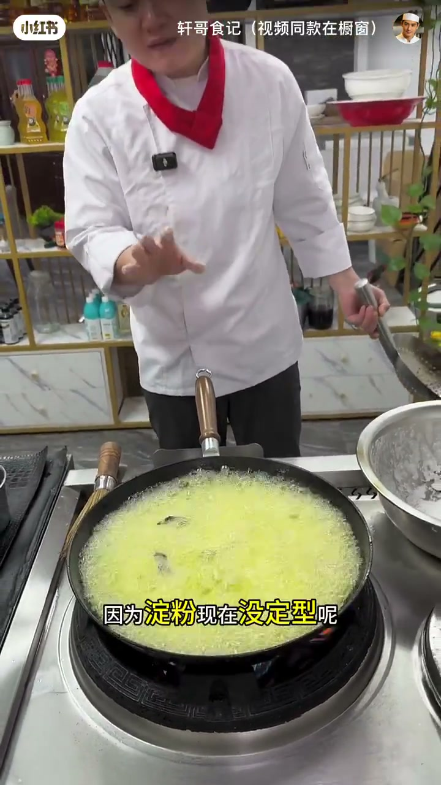
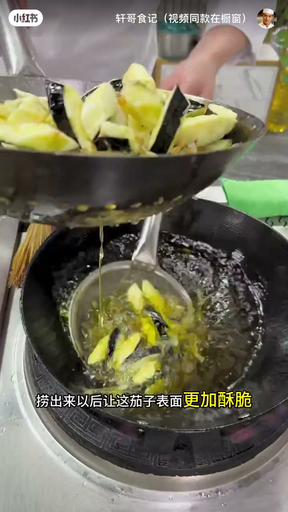
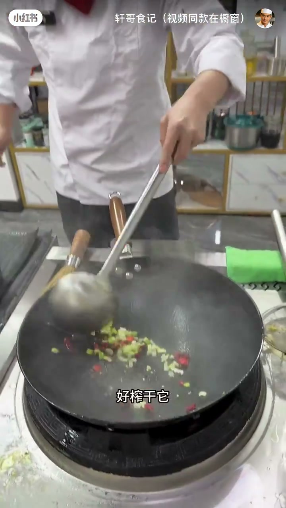
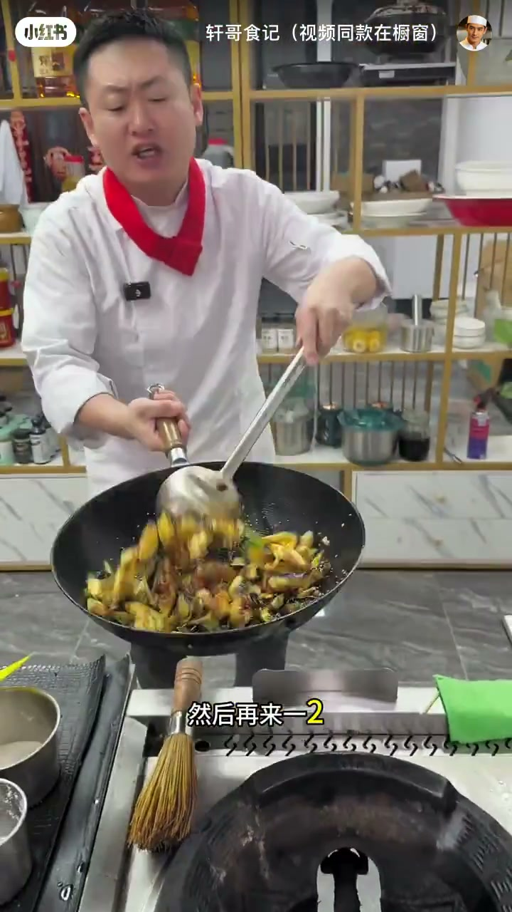

内容要点
账号「轩哥食记」约八分半风味茄子教程。ASR 口音错词多：鞋子→茄子、氧→瓤、斗粉→抖/拍粉、橙醋→陈醋、一匹先→老抽/生抽语境、铁→茄 等，已按烹饪语境校正。主线：去瓤切块 → 玉米淀粉反复拍粉 → 调酸甜汁 → 六成油温炸透+复炸 → 爆香浇汁。
知识结构
[00:00→02:20]
切配拍粉
去瓤、菱形块、玉米淀粉反复湿-粉。
[02:20→03:30]
汁与配料
椒葱香菜茎；醋糖1:1+蚝油+少许生抽。
[03:30→08:20]
炸与裹汁
180℃下锅、定型拨散、复炸、爆香熬汁。
总结
脆感来自玉米淀粉壳+炸干水分+复炸；汁要稠、下茄后少翻。
00:00–02:20切块与拍粉
茄子分条后去掉易出水的瓤，斜刀约两到三公分切菱形块。先过水再空干一点，因为要挂粉：只用玉米淀粉（强调土豆淀粉不行）。感觉干了就打水再扑粉，反复两三次，直到横切面薄薄挂粉——粉不好，出锅就不酥脆。

[00:10] 开场：四十年大厨招牌风味茄子——外焦里嫩、不额外加油的卖点叙事
Opening: a chef-style crispy eggplant dish—tender inside.

[00:40] 去茄瓤防出水；斜刀约 2–3cm 切菱形块
Remove watery pith; bias-cut 2–3 cm diamond chunks.

[01:20] 沾水后反复拍玉米淀粉（非土豆淀粉）至横切面薄薄挂粉
Wet then dust repeatedly with cornstarch only.
02:20–03:30配料与酸甜汁
备花椒/麻椒、干红椒、葱花、香菜茎（不用叶，免烫后发黑影响卖相）。汁：陈醋，白糖与醋约 1:1 且糖略多，加蚝油，生抽只几滴——多了会偏「酱油头」。饭店一份的量，视频按两份加倍。

[02:20] 配料：花椒/麻椒、干红椒、葱花、香菜茎（不用叶）
Mise en place: peppercorns, chili, scallion, cilantro stems.

[02:50] 酸甜汁：陈醋+白糖约 1:1 略多糖，蚝油，生抽仅几滴
Sweet-sour sauce: vinegar:sugar ≈ 1:1, oyster sauce, few drops soy.
03:30–08:20炸制、复炸与裹汁
油品随意，关键是六成油温：口播换算约 180℃，表面微冒烟；下锅前用漏勺沥掉多余干粉防崩油。顺着锅边下，先别翻，中大火 30 秒–1 分钟定型再拨散；续炸约一分半把水分逼出。捞出提油温到六成半–七成复炸更酥且更耐放。
倒出油留少许底油，爆香葱花干椒花椒，倒入汁大火熬到粘稠起大泡，再下茄子「一、二、三」迅速翻匀关火，撒熟芝麻与香菜段。成品要有咔咔脆声。
[03:40] 六成油温（约 180℃，微冒烟）下锅；先沥掉多余干粉防爆
About 180℃ oil; shake off loose starch before frying.

[05:00] 中大火定型后拨散，续炸约 1.5 分钟逼干水分
Medium-high heat to set, then separate and keep frying moisture out.

[05:50] 复炸至更酥：油温再抬至六成半–七成，听脆声捞出
Refry hotter for longer crisp; listen for the crunch.

[06:40] 底油爆香葱椒干椒，倒入汁大火熬稠再下茄迅速翻匀
Bloom aromatics, reduce sauce thick, toss eggplant briefly.

[07:30] 撒芝麻与香菜段，出锅咔咔脆；强调少翻两下即可
Sesame and cilantro; finish with an audible crunch.